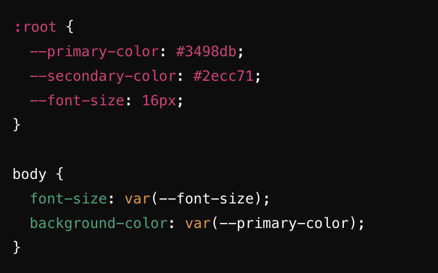
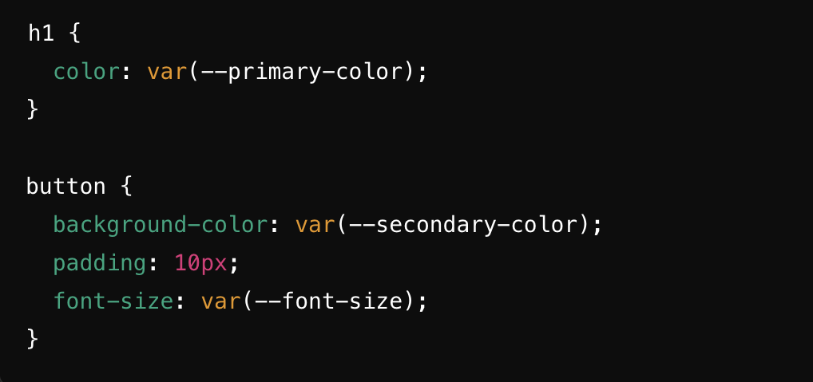
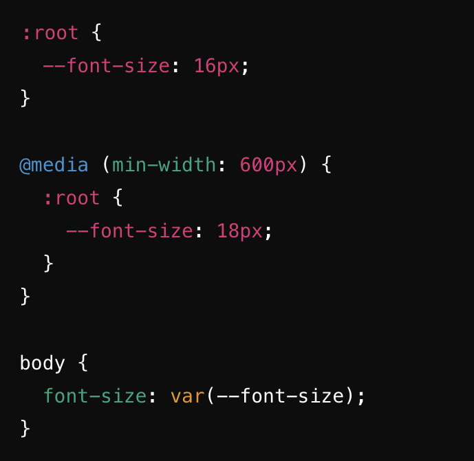

The most common use of CSS custom properties is to define global variables at the :root level, so they can be easily accessed anywhere in your stylesheet. Local variables, on the other hand, are defined within a specific selector and are only accessible within that selector’s scope. To define a CSS custom property, we must prefix the property key with two dashes. For demonstration purposes, you will often see variables defined on :root, but you can use them anywhere.
Custom properties in CSS are a powerful tool that can help make your styles more modular, reusable, and maintainable. To use custom properties in your CSS, you first need to define your custom properties. Custom properties are defined using the “_”prefix followed by a name for your variable. By defining your custom properties at the top of your CSS file or in a separate file, you can easily locate and update them as needed, this can help make your style more modular and easier to maintain.
The most common use of media queries is to adjust the layout of a website based on the width of the viewport. This allows you to create breakpoints where the design changes to different screen sizes. We can also use custom properties with media queries. For example, you can use custom properties to define light and dark color schemes, and to change the base font size for screen versus print.
In short, CSS custom properties are ideal for creating maintainable, and responsive designs. Whether you are working with global styles, themes, or responsive layouts, custom properties can significantly streamline your CSS and provide greater flexibility in how your site or application is styled. CSS Custom Properties are not limited to simple color or size declarations. You can use them for a wide range of properties, including margins, padding gradients, and even complex calculations.
CCS Tricks GeeksForGeeks Sitepoint.com Medium.com Coryrylan